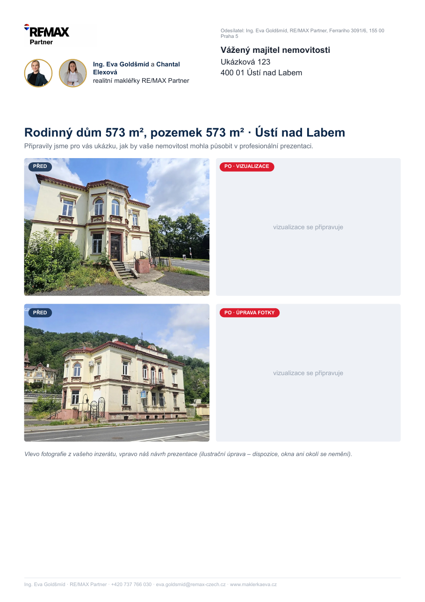

① Nejdřív schval vzhled dopisu (PDF, 2× A4)
Takhle bude vypadat každá nabídka: adresa majitele v okénku obálky, logo RE/MAX, Eva i Chantal, 2× před/po a na 2. straně text, cena a kontakt jen na Evu. Adresa v ukázce je smyšlená, vpravo se doplní vizualizace. Otevřít PDF ↗
Strana 1

Strana 2
② Vizualizace u jednotlivých nemovitostí
Evo, tohle je 2. kolo: vizualizace jsou opravené podle Tvých připomínek (u každé vidíš, co jsi minule psala). Zkontroluj prosím znovu a případně napiš, co ještě upravit:
- U každé fotky: ✅ OK, nebo ✏️ Předělat a do poznámky napiš, co chceš jinak (styl, světlejší, bez nábytku…).
- Chceš jinou fotku? Rozbal „Všechny fotky z inzerátu“, klikni na fotku (otevře se velká, šipkami listuješ) a dej „Použít místo fotky 1 / 2“.
- Celou nemovitost můžeš ❌ Vynechat (nehodí se, prodáno, realitka…).